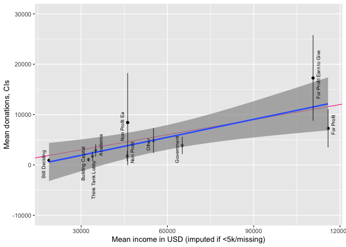
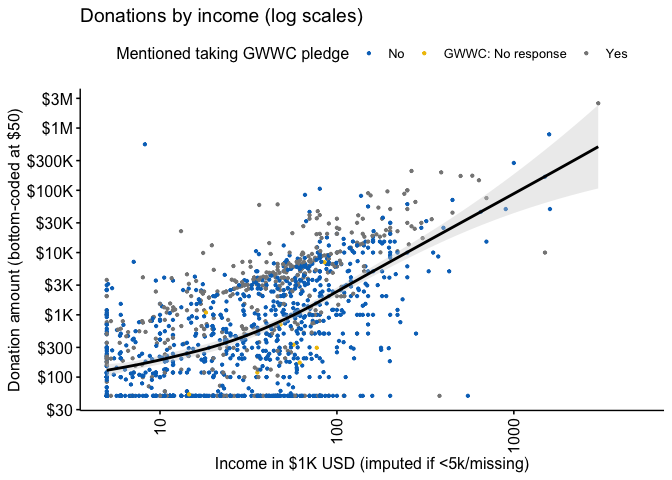
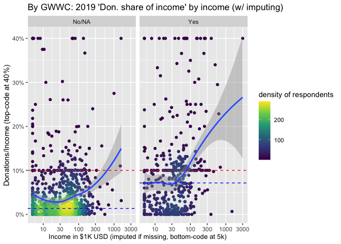

3 How EAs get Involved in EA
Notes on what to do, updating previous years…
Moss: We looked at simple differences across these binary groups last year, but open to other approaches
We should focus or graphs on differences between groups – happy to have confidence intervals for these, But how to do CI’s for ‘what factors were important for getting you involved’ … with multiple options …?
DR: We can easily construct CI’s over the share of respondents who selected any particular option, or over the difference in shares selecting one option (or any of a set) versus another.
JS to focus on:
3.1 How did you first hear about EA?
tabyl(eas_20$first_hear_qual) %>% kable()
eas2 <- na.omit(subset(eas_20, select = c(first_hear_qual)))
(
first_heard_ea <- ggplot(eas2, aes(x = first_hear_qual, fill=first_hear_qual)) +
geom_bar(na.rm = TRUE,aes(y = (..count..)/sum(..count..))) +
geom_text(aes(y = ((..count..)/sum(..count..)), label = scales::percent((..count..)/sum(..count..))), stat = "count", vjust = -0.25) +
scale_y_continuous(labels = percent) + theme_classic() +
labs(title = "Where first heard of EA", y = "Percent", x = "")+ theme(legend.position = "none") +
coord_flip()
)
eas_20 %>% tabylme(first_hear_ea, engage_cats_1, adorn="col")| first_hear_ea | 1-2 | 3 | 4 | 5 | NA_ |
|---|---|---|---|---|---|
| I don’t remember | 8.33% (33) | 11.11% (61) | 7.17% (39) | 5.51% (19) | 0.45% (1) |
| 80,000 Hours | 18.18% (72) | 11.11% (61) | 11.76% (64) | 8.41% (29) | 0.90% (2) |
| Animal Charity Evaluators | 0.00% (0) | 0.18% (1) | 0.00% (0) | 0.29% (1) | 0.00% (0) |
| Book, article, or blog post | 9.09% (36) | 9.11% (50) | 9.56% (52) | 9.86% (34) | 0.45% (1) |
| EA Global / EAGx | 0.25% (1) | 0.18% (1) | 0.00% (0) | 0.00% (0) | 0.45% (1) |
| Educational course | 1.26% (5) | 1.64% (9) | 1.47% (8) | 3.77% (13) | 0.00% (0) |
| 1.01% (4) | 1.46% (8) | 1.65% (9) | 1.45% (5) | 0.00% (0) | |
| GiveWell | 2.27% (9) | 1.64% (9) | 2.76% (15) | 3.48% (12) | 0.00% (0) |
| Giving What We Can | 1.26% (5) | 1.64% (9) | 0.92% (5) | 3.48% (12) | 0.45% (1) |
| LessWrong | 6.31% (25) | 8.20% (45) | 8.09% (44) | 10.72% (37) | 0.00% (0) |
| Local or university EA group | 4.04% (16) | 8.01% (44) | 10.11% (55) | 6.96% (24) | 0.90% (2) |
| One For The World | 0.00% (0) | 0.55% (3) | 1.10% (6) | 1.45% (5) | 0.00% (0) |
| Other | 7.32% (29) | 7.83% (43) | 9.56% (52) | 10.14% (35) | 0.45% (1) |
| Personal contact | 14.39% (57) | 15.66% (86) | 16.91% (92) | 18.55% (64) | 0.45% (1) |
| Podcast | 10.35% (41) | 9.65% (53) | 4.60% (25) | 4.64% (16) | 0.00% (0) |
| REG/EAF/FRI/Swiss group | 0.00% (0) | 0.36% (2) | 0.37% (2) | 2.03% (7) | 0.00% (0) |
| Search engine | 2.27% (9) | 1.28% (7) | 1.65% (9) | 0.87% (3) | 0.00% (0) |
| Slate Star Codex | 8.08% (32) | 6.01% (33) | 4.23% (23) | 2.61% (9) | 0.00% (0) |
| TED talk | 2.78% (11) | 3.28% (18) | 6.43% (35) | 4.93% (17) | 0.45% (1) |
| The Life You Can Save | 0.25% (1) | 0.36% (2) | 0.55% (3) | 0.58% (2) | 0.00% (0) |
| Vox’s Future Perfect | 1.77% (7) | 0.55% (3) | 0.92% (5) | 0.00% (0) | 0.00% (0) |
| NA | 0.76% (3) | 0.18% (1) | 0.18% (1) | 0.29% (1) | 95.05% (211) |
The overall respondent population, by where first heard of EA, colored by self-reported engagement:
#function for histogram with specified breakpoints
#function for log scaled histogram with specified breakpoints
hist_plot_lscale <- function(d,x,breaks){
ggplot(d, aes(x = x)) +
geom_histogram(fill = "white", color = "black") +
theme_classic() +
scale_x_log10(breaks=breaks, labels=breaks) +
theme(axis.text.x = element_text(angle = 90, vjust = 0.5, hjust=1))
}
#function for adding a cmedian line and label to a histogram
geom_vline_med <- function(x, tgap=1.3, label = "Median"){
list(geom_vline(xintercept = median(x, na.rm = TRUE), colour = "green", linetype = "dashed"),
geom_text( aes( x = median(x + tgap, na.rm = TRUE), label = label, y = 100, ), colour = "green", angle = 90, size = 3.5 ))
}stack_layers <- list(
geom_bar(),
coord_flip(),
scale_fill_hue(),
theme_minimal(),
guides(fill=guide_legend(title=NULL)),
theme(legend.position = "bottom")
)
(
first_hear_ea_all <- eas_20 %>%
ggplot() +
aes(x = forcats::fct_infreq(first_hear_ea), fill=engagement, y = (..count..)/sum(..count..)) +
stack_layers +
labs(title = "Where first heard of EA", y = "Percent", x = "")
)
(
first_hear_ea_all_no80kref <- eas_20 %>%
dplyr::filter(!grepl("80K hours", referrer)) %>%
ggplot() +
aes(x = forcats::fct_infreq(first_hear_ea), fill=engagement, y = (..count..)/sum(..count..)) +
stack_layers +
labs(title = "Where first heard of EA, excluding those referred by 80k", y = "Percent", x = "")
)
(
first_hear_ea_all_no80kref_nofill <- eas_20 %>%
dplyr::filter(!grepl("80K hours", referrer)) %>%
ggplot() +
aes(x = forcats::fct_infreq(first_hear_ea),
y = (..count..)/sum(..count..)) +
stack_layers +
labs(title = "Where first heard of EA, excluding those referred by 80k", y = "Percent", x = "")
)
(
first_hear_ea_all_no_named_ref <- eas_20 %>%
dplyr::filter(!grepl("80K hours|Giving What We Can|Less Wrong|SlateStar", referrer)) %>%
ggplot() +
aes(x = forcats::fct_infreq(first_hear_ea), fill=engagement, y = (..count..)/sum(..count..)) +
stack_layers +
labs(title = "Where first heard of EA, excluding those referred by specific named groups", y = "Percent", x = "")
)
By engagement level
Below, we summarize the introducers, comparing this for those who are ‘more engaged’ (reporting 4-5 level), to those who are less engaged.
Note that the overall share who are more-engaged (reporting 4-5) is 48.47%, so these bars should be roughly equal for the ‘average’ introducer.
(replicating table from 2019 survey post)
p_load(binom)
p_load(standardize)
stack_layers_noflip <- list(
scale_fill_hue(),
theme_minimal(),
guides(fill=guide_legend(title=NULL)),
theme(legend.position = "bottom"),
theme(axis.text.x = element_text(angle = -0, vjust = 0, hjust=0))
)
dodge_thing <- list(
geom_bar(position=position_dodge2(), stat='identity'),
scale_fill_hue(labels = c("1-3 engaged", "4-5 engaged" ) ),
theme_minimal(),
guides(fill=guide_legend(title=NULL)),
theme(legend.position = "top"),
guides(fill = guide_legend(title=NULL, reverse = TRUE)),
theme(axis.text.x = element_text(angle = -90, vjust = 0, hjust=0)),
scale_y_continuous(labels=percent, expand = expansion(mult = c(0,.1))),
coord_flip()
)
#binom.confint(x=mydata$Infected, n=mydata$Tested, methods="wilson")
#TODO: make the below stuff a function
fh_45_data <- eas_20 %>%
select(d_engage_4_5, first_hear_ea) %>%
filter(!is.na(d_engage_4_5)) %>%
group_by(d_engage_4_5, first_hear_ea) %>%
mutate(fheg_n = n()) %>%
group_by(d_engage_4_5) %>%
mutate(eng_n = n()) %>%
unique() %>%
mutate(fheg_share = fheg_n/eng_n) %>%
mutate(eg_share_se = sqrt((fheg_share*(1-fheg_share))/eng_n)) %>%
ungroup()
ci_s <- binom.confint(x=fh_45_data$fheg_share*fh_45_data$eng_n, n=fh_45_data$eng_n, methods="wilson")
fh_45_data <- cbind(fh_45_data, ci_s[,5:6])
(
fh_e45_plot <- fh_45_data %>%
ggplot() +
aes(x = reorder(first_hear_ea,fheg_share), fill=d_engage_4_5, y = fheg_share) +
dodge_thing +
geom_errorbar(aes(ymin=fheg_share-1.96*eg_share_se, ymax=fheg_share+1.96*eg_share_se), width=.2, colour = "pink", position=position_dodge(.9)) +
labs(title = "Where first heard of EA by 'highly engaged'", subtitle = "95 percent CI's (normal approx)", y = "Percent", x = "")
)
(
fh_e45_plot <- fh_45_data %>%
ggplot() +
aes(x = reorder(first_hear_ea,fheg_share), fill=d_engage_4_5, y = fheg_share) +
dodge_thing +
geom_errorbar(aes(ymin=fheg_share-1.96*eg_share_se, ymax=fheg_share+1.96*eg_share_se), width=.2, colour = "pink", position=position_dodge(.9)) +
labs(title = "Where first heard of EA by 'highly engaged'", subtitle = "95 percent CI's (normal approx)", y = "Percent", x = "")
)
(
fh_e45_plot_wilson <- fh_45_data %>%
ggplot() +
aes(x = reorder(first_hear_ea, fheg_share), fill=d_engage_4_5, y = fheg_share) +
dodge_thing +
geom_errorbar(aes(ymin=lower, ymax=upper), width=.2, colour = "pink", position=position_dodge(.9)) +
labs(title = "Where first heard of EA: Share of highly engaged vs not-highly-engaged", subtitle = "Wilson 95 percent CI's", y = "Percent", x = "")
)
(Simple table below for reporting in summary/abstract)
eas_20 %>%
select(d_engage_4_5, first_hear_ea) %>%
group_by(d_engage_4_5, first_hear_ea) %>%
summarise(n = n()) %>%
#this gets the numbers in each 'cel' of engage x first-hear,
#and 'peels off' the 'first-hear grouping'
mutate(freq = n / sum(n)) %>%
#proportions within each engage group (as 'sum' is still grouped)
select(-n) %>%
pivot_wider(names_from = d_engage_4_5,
names_prefix = "share_hi_eng_",
values_from = freq) %>%
dplyr::rename(
c(share_low_engaged = share_hi_eng_FALSE,
share_high_engaged = share_hi_eng_TRUE)
) %>%
select(first_hear_ea, share_high_engaged, share_low_engaged) %>%
arrange(-share_high_engaged)| first_hear_ea | share_high_engaged | share_low_engaged |
|---|---|---|
| Personal contact | 0.175 | 0.151 |
| 80,000 Hours | 0.105 | 0.141 |
| Other | 0.0979 | 0.0762 |
| Book, article, or blog post | 0.0967 | 0.091 |
| LessWrong | 0.0911 | 0.0741 |
| Local or university EA group | 0.0889 | 0.0635 |
| I don't remember | 0.0652 | 0.0995 |
| TED talk | 0.0585 | 0.0307 |
| Podcast | 0.0461 | 0.0995 |
| Slate Star Codex | 0.036 | 0.0688 |
| GiveWell | 0.0304 | 0.019 |
| Educational course | 0.0236 | 0.0148 |
| Giving What We Can | 0.0191 | 0.0148 |
| 0.0157 | 0.0127 | |
| Search engine | 0.0135 | 0.0169 |
| One For The World | 0.0124 | 0.00317 |
| REG/EAF/FRI/Swiss group | 0.0101 | 0.00212 |
| The Life You Can Save | 0.00562 | 0.00317 |
| Vox's Future Perfect | 0.00562 | 0.0106 |
| 0.00225 | 0.00423 | |
| Animal Charity Evaluators | 0.00112 | 0.00106 |
| EA Global / EAGx | 0.00212 |
First-hear by gender
fh_gender_data <- eas_20 %>%
select(d_female, first_hear_ea) %>%
filter(!is.na(d_female)) %>%
filter(!is.na(first_hear_ea)) %>%
mutate(d_female = as.logical(d_female)) %>%
group_by(d_female, first_hear_ea) %>%
mutate(fh_gender_n = n()) %>%
group_by(d_female) %>%
mutate(gender_n = n()) %>%
unique() %>%
mutate(fh_gender_share = fh_gender_n/gender_n) %>%
mutate(fh_gender_share_se = sqrt((fh_gender_share*(1-fh_gender_share))/gender_n)) %>%
ungroup()
ci_s <- binom.confint(x=fh_gender_data$fh_gender_share*fh_gender_data$gender_n, n=fh_gender_data$gender_n, methods="wilson")
fh_gender_data <- cbind(fh_gender_data, ci_s[,5:6])
dodge_thing_g <- list( geom_bar(position=position_dodge2(), stat='identity'),
scale_fill_hue(labels = c("Male", "Female")),
theme_minimal(), guides(fill=guide_legend(title=NULL)), theme(legend.position = "top"), guides(fill = guide_legend(title=NULL, reverse = TRUE)), theme(axis.text.x = element_text(angle = -20, vjust = 0, hjust=0)) ,
scale_y_continuous(labels=percent, expand = expansion(mult = c(0,.1))),
coord_flip())
#Todo: Should have been just a simple change to list
(
fh_gender_plot <- fh_gender_data %>%
ggplot() +
aes(x = reorder(first_hear_ea, fh_gender_share), fill=d_female, y = fh_gender_share) +
dodge_thing_g +
geom_errorbar(aes(ymin=fh_gender_share-1.96*fh_gender_share_se, ymax=fh_gender_share+1.96*fh_gender_share_se), width=.2, colour = "pink", position=position_dodge(0.9)) +
labs(title = "Where first heard of EA, by gender", subtitle = "95 percent CI's (normal approx)", y = "Percent", x = "")
)
First-hear by ethnicity
fh_njw_data <- eas_20 %>%
select(not_just_white, first_hear_ea) %>%
filter(!is.na(not_just_white)) %>%
filter(!is.na(first_hear_ea)) %>%
mutate(not_just_white = as.logical(not_just_white)) %>%
group_by(not_just_white, first_hear_ea) %>%
mutate(fh_njw_n = n()) %>%
group_by(not_just_white) %>%
mutate(njw_n = n()) %>%
unique() %>%
mutate(fh_njw_share = fh_njw_n/njw_n) %>%
mutate(fh_njw_share_se = sqrt((fh_njw_share*(1-fh_njw_share))/njw_n)) %>%
ungroup()
ci_s <- binom.confint(x=fh_njw_data$fh_njw_share*fh_njw_data$njw_n, n=fh_njw_data$njw_n, methods="wilson")
fh_njw_data <- cbind(fh_njw_data, ci_s[,5:6])
dodge_thing_g <- list( geom_bar(position=position_dodge2(), stat='identity'),
scale_fill_hue(labels = c("White", "Not just white")),
theme_minimal(), guides(fill=guide_legend(title=NULL)), theme(legend.position = "top"), guides(fill = guide_legend(title=NULL, reverse = TRUE)), theme(axis.text.x = element_text(angle = -20, vjust = 0, hjust=0)) ,
scale_y_continuous(labels=percent, expand = expansion(mult = c(0,.1))),
coord_flip())
#Todo: Should have been just a simple change to list
(
fh_njw_plot <- fh_njw_data %>%
ggplot() +
aes(x = reorder(first_hear_ea, fh_njw_share), fill=not_just_white, y = fh_njw_share) +
dodge_thing_g +
geom_errorbar(aes(ymin=fh_njw_share-1.96*fh_njw_share_se, ymax=fh_njw_share+1.96*fh_njw_share_se), width=.2, colour = "pink", position=position_dodge(0.9)) +
labs(title = "Where first heard of EA: Shares by ethnicity", subtitle = "95 percent CI's (normal approx)", y = "Percent", x = "")
)
3.2 Attrition from EA/EA survey by introducer – move to ‘engagement’ section?
We have run the EAS (in somewhat different formats) in 2014, 2015, 2017, 2018, 2019, and 2020. We have joined this data across years, enabling us additional insights.
Even without tracking the same individuals across years (which we can sometimes do), we can compare how the relative numbers of those who reported joining in a particular year, with a particular introducer, varies across years.
Below, a table of ‘first heard’ by survey year (note the 0’s in some cells suggest that the question options have changed slightly)
eas_all %>% filter(year_involved=="2014") %>%
mutate(first_hear_ea_l = fct_lump_min(first_hear_ea %>% as.factor, min = 20)) %>%
tabylme(year, first_hear_ea_l)| year | 80,000 hours | book/article/blog post etc. (please specify which, if you can) | givewell | giving what we can | i don’t remember | lesswrong | local or university ea group | other | other (book/article/blog post etc.) | other (please specify in the comment box) | personal contact (e.g. friend, colleague, relative) | slate star codex | ted talk | Other | NA_ |
|---|---|---|---|---|---|---|---|---|---|---|---|---|---|---|---|
| 2015 | 2.52% (10) | 15.37% (61) | 5.54% (22) | 5.04% (20) | 0.00% (0) | 26.95% (107) | 0.00% (0) | 0.00% (0) | 0.00% (0) | 10.33% (41) | 17.38% (69) | 0.00% (0) | 5.04% (20) | 10.58% (42) | 1.26% (5) |
| 2017 | 6.67% (10) | 6.67% (10) | 5.33% (8) | 4.67% (7) | 4.00% (6) | 25.33% (38) | 0.00% (0) | 0.00% (0) | 0.00% (0) | 8.67% (13) | 14.00% (21) | 6.00% (9) | 3.33% (5) | 15.33% (23) | 0.00% (0) |
| 2018 | 2.16% (5) | 0.00% (0) | 3.45% (8) | 5.17% (12) | 10.78% (25) | 20.26% (47) | 5.17% (12) | 0.00% (0) | 12.50% (29) | 0.00% (0) | 16.81% (39) | 4.31% (10) | 7.33% (17) | 11.64% (27) | 0.43% (1) |
| 2019 | 2.84% (5) | 0.00% (0) | 6.25% (11) | 3.41% (6) | 12.50% (22) | 13.07% (23) | 8.52% (15) | 6.25% (11) | 0.00% (0) | 0.00% (0) | 14.77% (26) | 4.55% (8) | 5.68% (10) | 22.16% (39) | 0.00% (0) |
| 2020 | 6.67% (6) | 0.00% (0) | 1.11% (1) | 3.33% (3) | 6.67% (6) | 12.22% (11) | 10.00% (9) | 13.33% (12) | 0.00% (0) | 0.00% (0) | 0.00% (0) | 5.56% (5) | 7.78% (7) | 32.22% (29) | 1.11% (1) |
j14_in_15 <- eas_all %>% filter(year_involved=="2014" & year==2015) %>% tally
j14_in_20 <- eas_all %>% filter(year_involved=="2014" & year==2020) %>% tally- In 2015, 397 people responded to the survey who say they joined in 2014
- In 2020, 90 people responded to the survey who say they joined in 2014
… So ‘in net’ 77.33% of 2014-joiners attrited from the survey between 2014 and 2020.
It appears that in the 2015 EAS, among those who say they joined EA in 2014
About 29% say they ‘first heard of EA’ from Less Wrong, and
a bit over 10% … from Givewell or GWWC
Also note
In the 2020 EAS, among those who say they joined EA in 2014
- About 13% … from Less Wrong
- About 10% … from Givewell or GWWC
Thus, although ‘attrition from the survey’ was high for both groups, it was much higher for those in LW, who dropped out at more that twice the rate of those in GW or GWWC.
- Differences in rates of year-to-year “attrition from the survey” (which )
Where we are able to track the same respondents across years, by their (anonymised ‘hashed and salted’) emails, we can measure
- Among those who we can track across years, the differences in levels of engagement 4-5 years later (but this may not reflect the actual thing we are looking for, especially if attrition rates differ)
if we plausibly have/assume constant “attrition from the survey” (among those who are still engaged) by first-heard, we may be able to construct differential “attrition from EA” by first-heard, but this seems a bit dicey. We should probably build a tenure/cohort/period model (but may save this for future work).
3.3 Do introducers predict and/or drive engagement?
… Differences in ‘where you first heard about EA?’ by Engagement, and across groups
Moss: previous years is easy enough (https://forum.effectivealtruism.org/posts/ZuGTc3awtG6nrziiq/ea-survey-2019-series-how-eas-get-involved-in-ea#Changes_across_time) but maybe Reinstein will have some additional thoughts based on the things he’s looking into about changes over time etc.
As in past years, we consider differences in the level of engagement of people who first heard of EA from different sources (we will call these ‘introducers’).
This is of potential interest in considering our policy goals, addressing:
What routes and activities should we promote?
whom should we focus on recruiting?
Driving engagement (causal): For a fixed group of people, particular involvement paths (linked to ‘where I first heard of EA, thus likely where I first get involved’) may actually lead to greater engagement, in a causal sense. E.g., some sites and communities, linked to particular introducers, may be doing a better job at making people feel welcome, explaining the importance of EA, offering paths to becoming engaged, and making people want to become engaged. We may want to fund and promote these introducers, sites, and communities more, and consider (and emulate) what they might be doing right.
Attracting the right ‘candidates’ (selection): Certain types of people may be more (or less) intrinsically likely to become engaged, and some introducers may tend to attract a more (or less) engagement-likely person. Suppose that the introducers (and involvement paths) themselves had no impact on engagement (other than making people aware of EA). We still would want to know which introducers attract more engagement-likely people; all-else-equal we would prefer to fund these introducers over those attracting less engagement-likely people.
We will not be able to perfectly identify and distinguish effects 1 and 2 in our data. Still:
The overall relationship between engagement and introducer (with suitable controls and comparisons) will be driven by the net effect of each of these effects, and will thus be somewhat informative about ’which introducers are doing better, either in their causal impact, or in their selection.
We will consider plausible empirical strategies to get closer to the causal effect in driving engagement.
Continuing the visual depiction above, we now put these on the same scale, at least for some of the larger categories, to see if people introduced by different sources are ‘more engaged’:
(Below, we remove the few people that report ‘first heard’ but not their engagement level).
(
engage_by_first_hear <- eas_20 %>%
filter(!is.na(first_hear_ea_lump) & !is.na(engagement)) %>%
ggplot() +
aes(x =
reorder(first_hear_ea_lump, as.numeric(engagement=="(5) High engagement"))
) +
geom_bar(aes(fill=engagement), position="fill") +
theme(axis.text.x = element_text(angle = 90, vjust = 0.5, hjust=1)) +
labs(title = "Engagement by 'first heard' aggregates, sorted by high engagement share", y = "share")
)
While the above is descriptive, it may not provide a fair comparison. Some introducers may have played a much more important role in years past, and if those who have been in EA the longest are most engaged, this may be driving the differences seen (or masking important differences). If we are looking to understand which introducers are attracting the right candidates, we probably want to know ‘for EAs learning about EA most recently from different sources, how does engagement vary?’
(And if care about what this tells us about factors driving engagement, we might want to hold constant even more.)*
* We will probably return to the latter question in our ‘Engagement’ post.
Below, we see this ordered broken down into ‘year involved’ groups (facet ‘columns’ of plots). These are vertically sorted by the number coming from these sources overall (e.g., Other/don’t remember" is the largest category with 420 and “Ted Talk” the smallest with 82)*
* We remove any ‘first heard’ sources that attracted less than 15 people in 2019-20.
(
engage_by_first_hear_year <- eas_20 %>%
filter(!is.na(first_hear_ea_lump) & !is.na(engagement) & !is.na(year_involved_groups)) %>%
filter(num_fh_yi_new >=15) %>%
ggplot() +
aes(x =
fct_rev(forcats::fct_infreq(first_hear_ea_lump))
) +
geom_bar(aes(fill=engagement), position="fill") +
theme(axis.text.x = element_text(angle = 90, vjust = 0.5, hjust=1)) +
labs(title = "Engagement x 'first heard' x 'year involved'", x="First heard", y="share") +
coord_flip() +
facet_wrap(vars(year_involved_groups), nrow=1)
)
Looking at the earliest years (the column to the left), categories in earlier years, such as ‘Local or university or EA group’ seem to “perform better” than other groups like ‘80,000 hours.’ However, we are looking at this using data from the 2020 survey. Thus, what we are seeing here is simply “of those who entered earliest and still remain in EA/completed the survey, what share are highly engaged?.” This may pick up the ‘effects’ we are looking for, but also the effect of potentially differential attrition.
Perhaps (this is just a thought experiment, not a claim) those learning of EA from Local Groups in the early years had a high tendency to drop out, but only those who were most engaged remained in the movement. Perhaps this “survival of the most engaged” dynamic was stronger among Local Groups than among (e.g.) those learning of EA through 80k hours. This would not imply that ‘a recruit from 80k is less likely to become engaged than a recruit through a local group’; it would only imply that ‘conditional on staying in the movement a long time, a recruit through a local group was more likely to be highly engaged.’
As there is less room for such ‘differential attrition’ among those recently involved, we focus on only those involved in 2019-20 below, ordered (top to bottom) by the share of each ‘introducer’ group that reports ‘High’ or ‘Considerable’ engagement.
TODO: Figure out how to put error bars on some part of these, perhaps the ‘high or considerable’ shares.
stacksums <- list(
scale_y_continuous(labels = percent),
theme_classic()
)
(
engage_by_first_hear_recent <- eas_20 %>%
filter(!is.na(first_hear_ea_lump)) %>%
filter(!is.na(engagement)) %>%
filter((year_involved_groups=="2019-20")) %>%
filter(num_fh_yi_new >=15) %>%
ggplot() +
aes(x =
reorder(first_hear_ea_lump, engage_high_n) ) +
geom_bar(aes(fill=engagement), position="fill") +
stat_summary(aes(y = engage_high_n),
fun.data = mean_cl_normal, na.rm = TRUE,
geom = "errorbar", colour = "pink", width = 0.2) +
stat_summary(aes(y = engage_high_n),
fun.data = mean_cl_normal, na.rm = TRUE,
geom = "errorbar", colour = "purple", width = 0.2,
fun.args = list(mult = 1)) +
theme(axis.text.x = element_text(angle = 90, vjust = 0.5, hjust=1)) +
labs(title = "Involved in 2019-20: Engagement x 'first heard'", x="First heard", y="share", caption = "95% CI bars for 'share 4-5 engaged' in pink, 1 SE in purple") +
coord_flip()
)
In contrast to the hypothetical tale presented above, even among those recently recruited… We see greater involvement among those introduced through local/university groups and personal contacts than for those coming in through other introducers such as 80K, SSC, and LessWrong.
We can compare the ‘newest recruits with the oldest recruits’:
engage_by_first_hear_older <- eas_20 %>%
filter(!is.na(first_hear_ea_lump)) %>%
filter(!is.na(engagement)) %>%
filter((year_involved_groups=="2014 or before")) %>%
filter(num_fh_yi_new >=15) %>%
ggplot() +
aes(x =
reorder(first_hear_ea_lump, engage_high_n) ) +
geom_bar(aes(fill=engagement), position="fill") +
stat_summary(aes(y = engage_high_n),
fun.data = mean_cl_normal, na.rm = TRUE,
geom = "errorbar", colour = "pink", width = 0.2) +
stat_summary(aes(y = engage_high_n),
fun.data = mean_cl_normal, na.rm = TRUE,
geom = "errorbar", colour = "purple", width = 0.2,
fun.args = list(mult = 1)) +
theme(axis.title.x=element_blank(),
axis.text.x=element_blank(),
axis.ticks.x=element_blank()) +
scale_y_continuous(limits=c(0,1)) +
labs(title = "Involved in 2014 or before: Engagement x 'first heard'", x="First heard") +
coord_flip()
(
engage_by_first_hear_new_vs_old <- ggarrange(engage_by_first_hear_recent, engage_by_first_hear_older,
ncol = 1, nrow = 2,
heights = c(1.5, 1),
align = "v",
common.legend = TRUE, legend = "bottom")
)
Some things are ‘stable,’ others change. E.g., considering Less-wrongers and Podcast people..
- those who started pre-2014 are in the upper-middle of the engagement distribution today
- those who started in 2019-20 are near the bottom of the engagement distribution today
Why? Differential attrition/selection? Cohort effects? Long-term vs short term effects? It could be any of these. Panel data could help with this but unfortunately it is difficult to connect participants across years.
Going back to the overall numbers to put this in perspective, again for those getting involved in 2019-20:
(
first_hear_ea_recent_stack <- eas_20 %>%
filter(!is.na(first_hear_ea_lump)) %>%
filter(!is.na(engagement)) %>%
filter((year_involved_groups=="2019-20")) %>%
filter(num_fh_yi_new >=15) %>%
ggplot() +
aes(x = forcats::fct_infreq(first_hear_ea_lump), fill=engagement, y = (..count..)/sum(..count..)) +
stack_layers +
labs(title = "Involved in 2019-20: Where first heard of EA", y = "Percent", x = "") +
facet_wrap(vars(year_involved_groups), nrow = 1)
)
Note, e.g., that while 80k appears to be somewhat ‘underperforming’ in terms of the shares becoming engaged, in total numbers it seems to be bringing in slightly more 4-5 rated EA’s than local groups.
And separating across all years:
(
first_hear_ea_all_lump_yr <- eas_20 %>%
filter(!is.na(first_hear_ea_lump)) %>%
filter(!is.na(engagement)) %>%
filter(!is.na(year_involved_groups)) %>%
filter(num_fh_yi_new >=15) %>%
ggplot() +
aes(x = forcats::fct_infreq(first_hear_ea_lump), fill=engagement, y = (..count..)/sum(..count..)) +
stack_layers +
labs(title = "Where first heard of EA", y = "Percent", x = "") +
facet_wrap(vars(year_involved_groups), nrow = 1)
)
For completeness and consistency with prior-years reports, we present
- shares in each engagement group
- with confidence intervals (for the 4-5 engaged share)
- pooled across all years of involvement*
- by all categories (disaggregated) of ‘first-heard.’
Below, this is compared to the overall shares in each engagement group.
* Thus, we should careful about making inferences about the differences between the first-heard introducers, for the reasons discussed above.
stacksums <- list(
scale_y_continuous(labels = percent),
theme_classic()
)
engage_by_first_hear_all <- eas_20 %>%
filter(!is.na(first_hear_ea)) %>%
filter(!is.na(engagement)) %>%
ggplot() +
aes(x = reorder(first_hear_ea, engage_high_n) ) +
geom_bar(aes(fill=engagement), position="fill") +
stat_summary(aes(y = engage_high_n),
fun.data = mean_cl_normal, na.rm = TRUE,
geom = "errorbar", colour = "white", width = 0.35) +
stat_summary(aes(y = engage_high_n),
fun.data = mean_cl_normal, na.rm = TRUE,
geom = "errorbar", colour = "brown", width = 0.35,
fun.args = list(mult = 1)) +
theme(axis.text.x = element_text(angle = 90, vjust = 0.5, hjust=1)) +
labs(title = " Engagement x 'first heard'", x="First heard", y="share", caption = "95% CI bars for 'share 4-5 engaged' in white, 1 SE in brown") +
coord_flip(ylim = c(0, 1))
engage_all <- eas_20 %>%
mutate(eas_20 = fct_recode(engagement,
"(1) None" = "(1) No engagement",
"(2) Mild" = "(2) Mild engagement" ,
"(3) Moderate" = "(3) Moderate engagement",
"(4) Considerable" = "(4) Considerable engagement"
)) %>%
filter(!is.na(first_hear_ea)) %>%
filter(!is.na(engagement)) %>%
ggplot() +
aes(x = NA) +
geom_bar(aes(fill=engagement), position="fill") +
stat_summary(aes(y = engage_high_n),
fun.data = mean_cl_normal, na.rm = TRUE,
geom = "errorbar", colour = "white", width = 0.35) +
stat_summary(aes(y = engage_high_n),
fun.data = mean_cl_normal, na.rm = TRUE,
geom = "errorbar", colour = "brown", width = 0.35,
fun.args = list(mult = 1)) +
theme(axis.text.x = element_text(angle = 90, vjust = 0.5, hjust=1)) +
labs(title = " Engagement shares overall", y="", x="") +
coord_flip(ylim = c(0, 1)) +
theme(legend.position = "none") +
theme(axis.title.x=element_blank(), axis.text.x=element_blank(), axis.ticks.x=element_blank(),
axis.title.y=element_blank(), axis.text.y=element_blank(), axis.ticks.y=element_blank())
require("ggpubr")
(
figure <- ggarrange(engage_all, engage_by_first_hear_all,
ncol = 1, nrow = 2,
heights = c(0.20, 1),
align = "v",
common.legend = TRUE, legend = "bottom")
)
3.4 Modeling “introducer” attrition, and engagement
We might frame this as a more structured problem, posing a question like:
For each EA introduced through a channel, what share do we expect to be Considerably/Highly engaged 4 years later?
Or more specifically and more impactfully:*
At the margin, for each additional recruit from 80K [vs local group] in 2021, how many EEAs can we expect to have in 2025’?
This combines the issues of attrition (i.e. persistence) and the dynamics of engagement level.
That would inform policy decisions, such as, e.g., “how much to spend on promoting 80k vs local groups.”
Differential attrition (in the movement and in the EAS) makes this a challenging question to answer.
The ‘at the margin’ part may also be important: I think there are some important differences in simply trying to “predict” the value of a typical EA from a particular channel and trying to evaluate the value of the marginal EA you could attract with an additional investment into that channel.
In considering past data, recruitment through particular channels may have been driven by particular opportunities and one-off events. This may have lead to a very different selection of EAs than what we would gain through further promotion of that channel.
I expect ‘diminishing marginal returns’ to investment in a process tapping finite resources (the pool of potential EAs)
3.4.1 Proposed modeling steps (discussion moved to engagement modeling section
Here we focus on ‘place heard of EA’ (introducer), for the reasons discussed above.
3.4.2 Simple ‘linear model’ of self-reported engagement level and involvers
We consider the association between ‘where someone first heard of EA’ (the ‘involver’) and their level of engagement, controlling for the length of time they have been in EA in a linear model. These (arguably) should still not be interpreted as causal relationships. These also do not necessarily inform us ‘how engaged someone will become’ who first hears about EA from these sources today. For simplicity’s sake (and we realise it is controversial), this linear model considers:
self-reported engagement (`
engagement_num` =1-5) as if it were a meaningful cardinal outcome, and alsothe binary ‘highly engaged’ self-reported outcome of (‘4-5 engagement’ vs ‘1-3 engagement’)
#Failed contrast coding moved below
p_load(sandwich, install = FALSE)
#eas_20_nm <- eas_20 %>%
#filter(year_involved!= "I don't remember" & !is.na(year_involved))
#set base groups
eas_20 <- eas_20 %>%
mutate(first_hear_ea_lump = relevel(first_hear_ea_lump, ref="Other/don't remember")) %>%
mutate(year_involved = relevel(year_involved, ref="2016"))
lm_engage_fh_yr <- lm(engagement_num ~ first_hear_ea_lump + years_involved_norm, eas_20) %>% coeftest(vcov = vcovHC)
lm_engage_fh_yr_cat <- lm(engagement_num ~ first_hear_ea_lump + year_involved, eas_20) %>% coeftest(vcov = vcovHC)
lm_engage45_fh_yr <- lm(d_engage_4_5 ~ first_hear_ea_lump + years_involved_norm, eas_20) %>% coeftest(vcov = vcovHC)
lm_engage45_fh_yr_cat <- lm(d_engage_4_5 ~ first_hear_ea_lump + year_involved, eas_20) %>% coeftest(vcov = vcovHC)
#NOT sure if this category is doing what it is meant to, so we will leave it out but come back to
lm_engage_fh_yr_cat_tenure <- lm(engagement_num ~ first_hear_ea_lump + years_involved_norm + year_involved, eas_20) %>% coeftest(vcov = vcovHC)
fh_names <- grep("first_hear_ea_lump", names(coef(lm_engage_fh_yr)), value = TRUE)
names(fh_names) <- gsub("first_hear_ea_lump", "", fh_names)
yr_names <- grep("year", names(coef(lm_engage_fh_yr_cat)), value = TRUE)
names(yr_names) <- gsub("year_involved", "yr. inv: ", yr_names)
(
lm_engage_simple_tbl <- huxreg(
"(1) Engagement num." = lm_engage_fh_yr, "(2)" = lm_engage_fh_yr_cat, "(3)" = lm_engage_fh_yr_cat_tenure, "(4) 4-5 Engagement" = lm_engage45_fh_yr, "(5)" =lm_engage45_fh_yr_cat,
coefs=c(fh_names, "Years involved" = "years_involved_norm", yr_names),
statistics = c("N. obs." = "nobs"),
error_pos = "right"
) %>%
set_bold(1, everywhere) %>%
set_bottom_border(1, everywhere) %>%
map_background_color(by_rows("grey87", "grey97")) %>%
set_caption_pos("bottom")
)| (1) Engagement num. | (2) | (3) | (4) 4-5 Engagement | (5) | ||||||
|---|---|---|---|---|---|---|---|---|---|---|
| 80,000 Hours | -0.150 | (0.087) | -0.144 | (0.086) | -0.144 | (0.086) | -0.032 | (0.041) | -0.028 | (0.042) |
| Book, article, or blog post | -0.038 | (0.092) | -0.045 | (0.091) | -0.045 | (0.091) | -0.012 | (0.045) | -0.015 | (0.044) |
| Educational course | 0.295 | (0.179) | 0.340 * | (0.161) | 0.340 * | (0.161) | 0.076 | (0.083) | 0.096 | (0.074) |
| GiveWell | 0.020 | (0.175) | 0.074 | (0.167) | 0.074 | (0.167) | 0.025 | (0.078) | 0.045 | (0.074) |
| Giving What We Can | -0.163 | (0.201) | -0.076 | (0.215) | -0.076 | (0.215) | -0.149 | (0.091) | -0.112 | (0.098) |
| LessWrong | -0.045 | (0.097) | -0.015 | (0.095) | -0.015 | (0.095) | -0.030 | (0.047) | -0.012 | (0.046) |
| Local or university EA group | 0.221 * | (0.087) | 0.245 ** | (0.085) | 0.245 ** | (0.085) | 0.095 * | (0.047) | 0.108 * | (0.046) |
| Personal contact | 0.075 | (0.077) | 0.080 | (0.076) | 0.080 | (0.076) | 0.033 | (0.037) | 0.035 | (0.037) |
| Podcast | -0.190 * | (0.096) | -0.129 | (0.094) | -0.129 | (0.094) | -0.121 ** | (0.046) | -0.095 * | (0.046) |
| Slate Star Codex | -0.427 *** | (0.119) | -0.467 *** | (0.119) | -0.467 *** | (0.119) | -0.168 ** | (0.056) | -0.182 ** | (0.057) |
| TED talk | 0.214 | (0.117) | 0.197 | (0.116) | 0.197 | (0.116) | 0.141 * | (0.057) | 0.135 * | (0.057) |
| Years involved | 0.132 *** | (0.010) | 0.219 *** | (0.022) | 0.055 *** | (0.004) | ||||
| yr. inv: 2009 or before | 0.246 | (0.226) | -1.288 *** | (0.304) | 0.141 | (0.091) | ||||
| yr. inv: 2010 | 0.565 ** | (0.174) | -0.750 ** | (0.251) | 0.312 *** | (0.082) | ||||
| yr. inv: 2011 | 0.405 * | (0.182) | -0.691 ** | (0.241) | 0.141 | (0.086) | ||||
| yr. inv: 2012 | 0.366 * | (0.157) | -0.511 * | (0.205) | 0.093 | (0.077) | ||||
| yr. inv: 2013 | 0.443 ** | (0.148) | -0.214 | (0.184) | 0.203 ** | (0.069) | ||||
| yr. inv: 2014 | 0.312 ** | (0.121) | -0.126 | (0.146) | 0.105 | (0.059) | ||||
| yr. inv: 2015 | 0.260 * | (0.103) | 0.041 | (0.117) | 0.069 | (0.049) | ||||
| yr. inv: 2017 | -0.013 | (0.094) | 0.206 * | (0.083) | -0.007 | (0.046) | ||||
| yr. inv: 2018 | -0.227 * | (0.091) | 0.212 ** | (0.073) | -0.103 * | (0.045) | ||||
| yr. inv: 2019 | -0.233 * | (0.092) | 0.424 *** | (0.075) | -0.080 | (0.047) | ||||
| yr. inv: 2020 | -0.877 *** | (0.089) | -0.385 *** | (0.041) | ||||||
| N. obs. | 1753 | 1753 | 1753 | 1753 | 1753 | |||||
| *** p < 0.001; ** p < 0.01; * p < 0.05. | ||||||||||
Above we present some simple linear models of the 1-5 self reported engagement (in column pairs 1-3), and of the ‘high engagement’ binary (column pairs 4-5).
These are standard linear models with “dummy-coded” categorical variables. The ‘base group’ category for “where individuals first heard about EA” here is “Other/don’t remember,” and the base year-cohort is ‘2016.’ All coefficients can be interpreted as adjustments relative to those groups.*
The engagement levels for these base group are also approximately only slightly below the mean engagement levels (see graphs above), making the other coefficients approximately interpretable as adjustments from the mean. In future, we may prefer to use ‘deviation coding’ to be more precise in this interpretation.
Heteroskedasticity-robust ‘sandwich’ standard deviations are given in parentheses in the adjacent columns. The model is estimated (in 1 and 4) with tenure/cohort as a continuous variable (‘number of years involved’), or (in 2 and 5), with a dummy for each cohort. Column (3) uses both the continuous variable and the cohort dummies; the latter can be interpreted as ‘deviations from the overall linear trend.’
Bearing in mind the previous caveats, we may still consider which ‘first-heard involvers’ are associated with the highest level of engagement, controlling for time-in-EA. Infomally summarizing the general results of the above, across the specifications in the different columns:
Local or university EA group is the ‘winner,’ with substantially higher engagement (all ‘modeled’ things being equal)
Ted talks and ‘Educational courses’ also do well
SSC substantially underperforms
The others (including 80k) all do about average, but
- we have a lack of statistical power to rule out substantial differences between most specific pairs of involvers (note the standard errors in parentheses)
As noted, the model also considers the association with ‘time in EA.’ Again, informally summarizing this:
Engagement appears to increase more or less monotonically with time in EA.
However, this could be picking up a survival/selection issue, as perhaps ‘only the most engaged remain in EA.’
There are signs that this relationship is nonlinear, with engagement perhaps ‘increasing at a decreasing rate’ in cohort or tenure.*
* Our future work should explore this with an Age-Period-Cohort (and tenure) approach, combining data from multiple EA surveys. The nonlinearity is strongly suggested in column (3), where the adjustments tend to be more ‘opposite the linear trend’ the further we are from the middle cohort. However, this could also be explored more carefully in later work.
3.4.3 Simple ‘linear probability model’ of self-reported-engagement levels 4-5
3.4.4 Ordered logit model of SR engagement
3.4.5 Building Random Forest model to predict engagement
(I am leveraging and adjusting the work done by Kim Cuddington on earlier data HERE)
Setup, training and testing set
p_load(caret)
p_load(randomForest)
in_train <- createDataPartition(y = eas_20$d_engage_4_5, p=0.7, list=FALSE)
training<-EAf[inTrain,]
testing<-EAf[-inTrain,]
Build the random forests
#options(digits=2)
#a=as.numeric(Sys.time())
#set.seed(a)
#classifier_rf <- randomForest(y=training$member_ea_forum x=training[-match("member_ea_forum",names(training))])
3.5 Notes and todos on ‘Introducers’ vs. Engagement … to be integrated above
Moss: A separate question purely to do with ‘past people’ … people recruited in the past, how did they ‘engage differently’ … it is about informing future … but also to learn descriptively to about people in the movement
Todo – add CIs for mean
Kim’s random forest – binary with EA forum membership as proxy for engagement
– Self-report variable is only 2019-20!
Most activities also only in later years
Project of ‘lifetime value’ is a longer term project Attrition can be put off to some extent
Ben Todd growth models, highly engaged EA’s
Is EA stagnating … cruxy – are we getting fewer HQ people in these days
Pushes us towards simpler things? Simpler things that have value?
‘simplest for 1st heard x engagment: testing the hyp. of whether there is a difference between groups under the assumption that attrition is selecting similarily between groups’
(but could one bring evidence on the differential attrition)
Crosstabs or bifurcations and plots:
Engagement levels by introducers; individual and grouped
‘Share who became engaged’ by group, with Confidence Intervals … maybe plot these
Statistical tests and (?) CI for a meaningful measure of the strength of this relationship (overall and for individual comparisons)
?Multilevel model by ‘type of introducer’ (later)
But this “penalis[es] routes which have disproportionately recruited EAs more recently.”
So do the same as the above (or maybe replacing the above) for “those who have been in EA for 2+ years” , or within groups of roughly equal ‘number of years in EA’ (e.g., 0-1 year, 2-4 years, 4-6, 6-10, 10+)
But that ‘correction’ may cause different problems:
- Newer introducers may have small or zero EA’s with long tenures
- There are different hurdles going on here; those only-recently learning about EA who learn about it from an old-school source may be weirdos.
- But I suppose we are OK with that as we want to know about the impact ‘for those being introduced today?’
Responding to (1) and perhaps (2): once we bring the multiyear data together, we could compare engagement of people (e.g.) ‘2 years after being introduced’ …
- of course then we are comparing people in different years, and there may be different period effects … motivating us to build an Age-Period-Cohort (or Tenure-Period-Cohort?) model. And I know you’ve already done some such regression models, so maybe I should start with them?
2019 post:
“As we know that respondents who more recently heard of EA are much less likely to be more involved in EA (as captured by metrics such as EA Forum membership- see graph below), this means that we would expect those who heard of EA from 80,000 Hours to contain many more new and less involved EAs.”
" This means that comparing the percentages of more involved EAs who first heard EA from different sources will likely be misleading, due to penalising routes which have disproportionately recruited EAs more recently. That said, it may still serve as an indicator of the effect of different groups’ recruitment on the composition of EA so far."
Differences across groups: Gender, ethnicity (white/non), level of engagement
In responses: First Hearing of EA, Factors Important for Getting Involved in EA
Moss: We looked at simple differences across these binary groups last year, but open to other approaches
Replicating the graphs from prior years (e.g., 2019)
Frame a question and a statistical test like … ‘do the top 10% of introducers select or drive higher engagement than the bottom 10%?’
Or “does first-heard account for more that X% of the variation in the engagement outcome?”
table(first_heard_EA) table2 <- table(first_heard_EA) prop.table(table2)
3.6 What factors were important for getting you more involved in EA? (descriptives)
The survey presented a series of 15 tick boxes (plus a free-entry ‘other category’) asking
Which of the following were important for you getting involved in EA? (Select all that apply)
We plot the prevalence of such ticks in the graphs below, both for
- ‘share’: the rate at which each ‘involver’ was ticked overall, and for
- ‘wshare’: the “share of each individuals’ ticks” (the latter weighting each ‘involved’ tick so they add up one within each individual, perhaps loosely interpreted as ‘contribution shares to becoming more involved in EA’).
share_inv <- eas_20 %>%
select(starts_with("involve_")) %>%
gather(involve_cat, d_tick, starts_with("involve_")) %>%
## calculate the height of the bars
group_by(involve_cat) %>%
dplyr::summarise(share = mean(d_tick, na.rm=TRUE) )
w_share_inv <- eas_20 %>%
select(starts_with("involve_"), ea_id) %>%
filter(!is.na(ea_id)) %>%
gather(involve_cat, d_tick, starts_with("involve_")) %>%
filter(d_tick==1) %>%
group_by(ea_id) %>%
mutate(
n_ticks = n(), #how many ticks for that person
tick_sh = d_tick/n_ticks
) %>%
group_by(involve_cat) %>%
dplyr::summarise(wshare = mean(tick_sh, na.rm=TRUE) )
shares_inv <- as.tibble(c(share_inv, w_share_inv[2]))
## Plot
(
shares_wt_bar <- shares_inv %>%
tidyr::pivot_longer(cols=c('share', 'wshare'), names_to='weighting',
values_to="share") %>%
ggplot(aes(x=reorder(involve_cat, share), y=share, fill=weighting)) +
geom_bar(stat='identity', position='dodge') +
coord_flip() +
theme_minimal() +
theme( axis.text.y =element_text(face = "bold"))
)
80000 hours is by far the most frequently ticked; ticked by over half of respondents. However, this seems to be driven by people who tick more boxes than others. However, if we consider the weighted measure then ‘other’ is the largest (just over 40%), followed by ‘group’ (around 35%), 80k (about 32%), and several categories bunched close together around 30%.
Excluding those referred from 80k
bar_thing <- list( stat_summary(fun.y=mean, geom="bar",
position=position_dodge(1)),
stat_summary(fun.data = mean_cl_normal,
geom = "errorbar",
width=0.5, color="blue",
position=position_dodge(0.85)) ,
coord_flip(),
theme_minimal()
)dodge_thing_g <- list( geom_bar(position=position_dodge2(), stat='identity'),
scale_fill_hue(labels = c("White", "Not just white")),
theme_minimal(), guides(fill=guide_legend(title=NULL)), theme(legend.position = "top"), guides(fill = guide_legend(title=NULL, reverse = TRUE)), theme(axis.text.x = element_text(angle = -20, vjust = 0, hjust=0)) ,
scale_y_continuous(labels=percent, expand = expansion(mult = c(0,.1))),
coord_flip())share_inv_no80 <- eas_20 %>%
dplyr::filter(!grepl("80K hours", referrer)) %>%
select(starts_with("involve_")) %>%
gather(involve_cat, d_tick, starts_with("involve_")) %>%
## calculate the height of the bars
group_by(involve_cat) %>%
dplyr::summarise(share = mean(d_tick, na.rm=TRUE) )
w_share_inv_no80 <- eas_20 %>%
dplyr::filter(!grepl("80K hours", referrer)) %>%
select(starts_with("involve_"), ea_id) %>%
filter(!is.na(ea_id)) %>%
gather(involve_cat, d_tick, starts_with("involve_")) %>%
filter(d_tick==1) %>%
group_by(ea_id) %>%
mutate(
n_ticks = n(), #how many ticks for that person
tick_sh = d_tick/n_ticks
) %>%
group_by(involve_cat) %>%
dplyr::summarise(wshare = mean(tick_sh, na.rm=TRUE) )
shares_inv_no80 <- as.tibble(c(share_inv_no80, w_share_inv_no80[2]))
## Plot
(
shares_wt_bar_no80 <- shares_inv_no80 %>%
tidyr::pivot_longer(cols=c('share', 'wshare'), names_to='weighting',
values_to="share") %>%
ggplot(aes(x=reorder(involve_cat, share), y=share, fill=weighting)) +
geom_bar(stat='identity', position='dodge') +
coord_flip() +
theme_minimal() +
theme( axis.text.y =element_text(face = "bold")) +
labs(title = "Share citing each source; weighted and unweighted", subtitle = "80k referrals excluded", y = "Percent", x = "")
)
pre_involve_bar <- function(df, crossvar) {
df %>%
dplyr::select(starts_with("involve_")) %>%
involve_rename %>%
cbind(., eas_20 %>% dplyr::select({{crossvar}})) %>%
filter(!is.na({{crossvar}}))
}
nval_f <- function(df) {
df %>%
group_by(variable) %>%
mutate( nval = mean(value, na.rm=TRUE) ) %>%
ungroup()
}
involve_rename <- function(df) {
df %>%
dplyr::rename_all(
funs(
stringr::str_replace_all(., 'involve_', ' ')
)
) %>%
janitor::clean_names(to_any_case("title")) %>%
rename("80K" = "X80k") %>%
rename("TLYCS" = "Lycs",
"EAGx" = "Eagx",
"ACE" = "Ace",
"LessWrong" = "Lesswrong",
"EA Global" = "Ea Global",
"SlateStarCodex" = "Slate Star",
"GiveWell" = "Givewell"
)
}
involve_labs <- list(
xlab("'Important for getting involved'"),
ylab("Share ticking box")
)(
involve_by80k_bar <- eas_20 %>%
pre_involve_bar(referrer) %>%
mutate(d_80k_ref = ifelse(referrer=="80K hours",1,0)) %>%
dplyr::select(-referrer) %>%
melt(id="d_80k_ref") %>%
nval_f %>%
ggplot(
aes(x=reorder(variable, nval), y=value, fill=factor(d_80k_ref))) +
bar_thing +
scale_fill_discrete("80k referrer") +
guides(fill = guide_legend(reverse = TRUE)) +
labs(title = "'Important for involvement' by 80k referrer", subtitle = "95 percent CI's (normal approx)") + involve_labs
)
We might be concerned that 80k is overrepresented here because of its importance in referring people to this survey. We thus give a breakdown of this by whether 80k is the link that brought the respondent to the survey. Even if we leave off those referred from 80K, it is still the most heavily mentioned, but by less of a substantial margin.
3.6.1 Differences in ‘getting involved’ factors by group
By engagement (1-3 vs 4-5):
(
involve_by_engage_bar <- eas_20 %>%
pre_involve_bar(d_engage_4_5) %>%
melt(id="d_engage_4_5") %>%
nval_f %>%
ggplot(
aes(x=reorder(variable, nval), y=value, fill=factor(d_engage_4_5))) +
bar_thing +
scale_fill_discrete("Highly engaged (4-5)") +
guides(fill = guide_legend(reverse = TRUE)) +
labs(title = "'Important for involvement' by engagement", subtitle = "95 percent CI's (normal approx)") + involve_labs
)
By gender
(
involve_by_gender_bar <- eas_20 %>%
pre_involve_bar(d_female) %>%
melt(id="d_female") %>%
nval_f %>%
ggplot(
aes(x=reorder(variable, nval), y=value, fill=factor(d_female))) +
bar_thing +
scale_fill_discrete("Female or 'not Male'") +
labs(title = "'Important for involvement' by gender", subtitle = "95 percent CI's (normal approx)") + involve_labs
)
eas_20_f <- eas_20 %>% filter(d_female==1)
eas_20_m <- eas_20 %>% filter(d_female==0)
pre_involve_bar_s <- function(df, crossvar) {
df %>%
dplyr::select(starts_with("involve_")) %>%
involve_rename %>%
cbind(., df %>% dplyr::select({{crossvar}})) %>%
filter(!is.na({{crossvar}}))
}
involve_by_engage_bar_f <- eas_20_f %>%
pre_involve_bar_s(d_engage_4_5) %>%
melt(id="d_engage_4_5") %>%
nval_f %>%
ggplot(
aes(x=reorder(variable, nval), y=value, fill=factor(d_engage_4_5))) +
bar_thing +
scale_fill_discrete("Highly engaged (4-5)") +
guides(fill = guide_legend(reverse = TRUE)) +
labs(title = "Females/other: 'Important for involvement' by engagement", subtitle = "95 percent CI's (normal approx)") + involve_labs
involve_by_engage_bar_m <- eas_20_m %>%
pre_involve_bar_s(d_engage_4_5) %>%
melt(id="d_engage_4_5") %>%
nval_f %>%
ggplot(
aes(x=reorder(variable, nval), y=value, fill=factor(d_engage_4_5))) +
bar_thing +
scale_fill_discrete("Highly engaged (4-5)") +
guides(fill = guide_legend(reverse = TRUE)) +
labs(title = "Males: 'Important for involvement' by engagement", subtitle = "95 percent CI's (normal approx)") + involve_labs
(
involve_by_engage_bar_m_f <-
ggarrange(involve_by_engage_bar_f, involve_by_engage_bar_m,
ncol = 1, nrow = 2,
heights = c(3, 3),
align = "v",
common.legend = TRUE, legend = "bottom")
)#trying to redo the above more cleanly with nesting
involve_by_engage_bar_fn <- function(df, lab) {
df %>%
pre_involve_bar_s(d_engage_4_5) %>%
melt(id="d_engage_4_5") %>%
nval_f %>%
ggplot(
aes(x=reorder(variable, nval), y=value, fill=factor(d_engage_4_5))) +
bar_thing +
scale_fill_discrete("Highly engaged (4-5)") +
guides(fill = guide_legend(reverse = TRUE)) +
involve_labs +
labs(title = lab, subtitle = "95 percent CI's (normal approx)") + involve_labs
}
labs_gen <- list("Males: 'Important for involvement' by engagement", "Non-male: 'Important for involvement' by engagement", "No gender given: 'Important for involvement' by engagement")
eas_20_ng <- eas_20 %>%
group_by(d_female) %>% nest()
involve_by_engage_by_gen_bar <- purrr::map2(eas_20_ng$data, labs_gen, involve_by_engage_bar_fn)
(
involve_by_engage_bar_m_f_n <-
ggarrange(
involve_by_engage_by_gen_bar[[1]], involve_by_engage_by_gen_bar[[2]], involve_by_engage_by_gen_bar[[3]],
ncol = 1, nrow = 3,
heights = c(3, 3),
align = "v",
common.legend = TRUE, legend = "bottom")
) #cool, but how to 'map' this part too?
(Some tables for key responses to report in bullets/text … messy)
eas_20 %>%
dplyr::select(d_female, starts_with("involve_")) %>%
filter(!is.na(d_female)) %>%
tabyl(d_female, involve_personal_contact) %>% tabylstuff()| d_female | 0 | 1 | NA_ | Total |
|---|---|---|---|---|
| 0 | 64.5% (743) | 34.0% (392) | 1.5% (17) | 100.0% (1152) |
| 1 | 56.3% (238) | 41.8% (177) | 1.9% (8) | 100.0% (423) |
| Total | 62.3% (981) | 36.1% (569) | 1.6% (25) | 100.0% (1575) |
eas_20 %>%
dplyr::select(d_female, starts_with("involve_")) %>%
filter(!is.na(d_female)) %>%
tabyl(d_female, involve_group) %>% tabylstuff()| d_female | 0 | 1 | NA_ | Total |
|---|---|---|---|---|
| 0 | 70.1% (807) | 28.5% (328) | 1.5% (17) | 100.0% (1152) |
| 1 | 62.4% (264) | 35.7% (151) | 1.9% (8) | 100.0% (423) |
| Total | 68.0% (1071) | 30.4% (479) | 1.6% (25) | 100.0% (1575) |
By ethnicity (Turquoise = Not just white, Red = just white):
(
involve_by_ethnicity_bar <- eas_20 %>%
pre_involve_bar(not_just_white) %>%
melt(id="not_just_white") %>%
nval_f %>%
ggplot(
aes(x=reorder(variable, nval), y=value, fill=factor(not_just_white))) +
bar_thing +
scale_fill_discrete("Not just White") +
guides(fill = guide_legend(reverse = TRUE)) +
labs(title = "'Important for involvement' by Ethnicity", subtitle = "95 percent CI's (normal approx)") + involve_labs
)
We next put this in the context of simple multivariate “linear probability models” of each ‘involve outcome,’ with each of the ‘groups’ below on the right-hand-side of the model, as well as (de-meaned) ‘years involved in EA.’ (The latter serves to control for confound that time-in-EA is associated with both engagment and with the prominence of certain involvers.)
# main linear models (I precode a bunch of stuff here, it's not general )
lm_fun = function(response) {
form = paste(response, "~ d_engage_4_5 + d_female + not_just_white + years_involved_norm ")
lm(as.formula(form), data = eas_20)
}
#create named vector of response variables
involve_resp <- eas_20 %>% smn("involve_")
involve_resp <- purrr::set_names(involve_resp)
#fit models
involve_mods <- involve_resp %>%
map(lm_fun)
#recover coefficients and se's
#coefs_im <- plyr::ldply(involve_mods, coef)
results_im <- ldply(involve_mods,function(i)coef(summary(i)))
#matrix(unlist(results_im, byrow=T, 4,.))
#make this a nice dataframe to plot
im_est <- cbind(as.vector(involve_resp), matrix(unlist(t(results_im[2:3])), byrow=T, 16, 5*2)) %>%
as.tibble()
coef_list <- c("c", "c_se", "engage_4_5", "engage_4_5_se", "female", "female_se", "not_just_white", "not_just_white_se", "years_involved_norm", "years_involved_norm_se")
names(im_est) <- c("involver", coef_list)
im_est <- im_est %>%
mutate(
across(-matches("involver"), as.numeric))
Below, we plot the results of the above model. Intercepts (rate of selecting an option) depict the base group (white males, less engaged), with vertical arrows denoting adjustments for other groups.
(
involve_plot <- im_est %>%
ggplot() +
aes(x = reorder(involver, c), y = c) +
geom_bar(stat='identity', fill = "grey44", width = 0.4, position = position_dodge(width = 6.5)) +
theme(axis.text.x = element_text(angle = -35, vjust = 0, hjust=0)) +
geom_segment(aes(x=involver, xend=involver, y=c, yend=c+`engage_4_5`, size = 1.4),
arrow = arrow(length = unit(0.15, "cm")), colour = "skyblue3", alpha=0.65,
position = position_nudge(x = 0.15, y = 0)
) +
geom_segment(aes(x=involver, xend=involver, y=c, yend=c+female, size=1),
arrow = arrow(length = unit(0.15, "cm")), colour = "hotpink", alpha = 0.65,
position = position_nudge(x = 0.3, y = 0)
) +
geom_segment(aes(x=involver, xend=involver, y=c, yend=c+not_just_white, size=0.8),
arrow = arrow(length = unit(0.15, "cm")), colour = "orangered3",
position = position_nudge(x = -.2, y = 0)
) +
theme(legend.position = "none",
axis.title.x = element_blank(),
plot.caption=element_text(hjust = .5)) +
scale_x_discrete(labels=gsub("involve_","",involve_resp)) +
theme(axis.ticks=element_blank(), axis.text.x =element_text(face = "bold")) +
scale_y_continuous(labels=percent, expand = expansion(mult = c(0,.1))) +
labs(y = "Share ticking 'important'",
caption = "Grey: base group, Blue: Engaged 4-5, Pink: Female, Red: Not-just-white") +
coord_flip()
)
We next present each of the adjustment coefficients in a ‘forest plot,’ along with 95% confidence intervals for these. Note that these are sorted in the same order as above: by the frequency that each involver is chosen overall.
(
involve_coefs <- im_est %>%
ggplot() +
theme(axis.text.x = element_text(angle = -35, vjust = 0, hjust=0)) +
aes(x = reorder(involver, c), y = c) +
geom_point(aes(x=involver, y=engage_4_5), colour = "skyblue3",position = position_nudge(x = -0.2, y = 0)
) +
geom_point(aes(x=involver, y=female), colour = "hotpink"
) +
geom_point(aes(x=involver, y=not_just_white), colour = "orangered3", position = position_nudge(x = 0.2, y = 0)
) +
theme(legend.position = "none",
axis.title.x = element_blank(),
plot.caption=element_text(hjust =-3)) +
geom_errorbar(
aes(ymin=engage_4_5 - 1.96*engage_4_5_se, ymax=engage_4_5+ 1.96*engage_4_5_se),
width=.2, colour = "skyblue3", position = position_nudge(x = -0.2, y = 0)
) +
geom_errorbar(
aes(ymin=female - 1.96*female_se, ymax = female + 1.96*female_se),
width=.2, colour = "hotpink",
) +
geom_errorbar(
aes(ymin=not_just_white - 1.96*not_just_white_se, ymax = not_just_white + 1.96*not_just_white_se),
width=.2, colour = "orangered3", position = position_nudge(x = 0.2, y = 0)
) +
scale_y_continuous(labels=label_percent(accuracy = 1L), breaks=c(-.05, 0, 0.05, 0.10, 0.15, 0.20, 0.25) ) +
labs(y = "Difference in share ticking 'important'",
caption = "Coefficients and 95pct CI's: Blue = Engaged 4-5, Pink= Female, Red = Not-just-white") +
coord_flip() +
geom_hline(yintercept = 0, colour="black", size=1) +
theme_minimal() +
theme( axis.text.y =element_text(face = "bold"))
)
(
involve_coefs_XX <- im_est %>%
ggplot() +
theme(axis.text.x = element_text(angle = -35, vjust = 0, hjust=0)) +
aes(x = reorder(involver, -c), y = c) +
geom_segment(aes(x=involver, xend=involver, y=0, yend=engage_4_5), colour = "skyblue3",
arrow = arrow(length = unit(0.15, "cm")), width=2,
position = position_nudge(x = 0.25, y = 0)
) +
geom_segment(aes(x=involver, xend=involver, y=0, yend=female), colour = "hotpink",
arrow = arrow(length = unit(0.15, "cm")), width=2,
position = position_nudge(x = 0.45, y = 0)
) +
geom_segment(aes(x=involver, xend=involver, y=0, yend=not_just_white), colour = "orangered3",
arrow = arrow(length = unit(0.15, "cm")), width=2,
position = position_nudge(x = 0.6, y = 0)
) +
theme(legend.position = "none",
axis.title.x = element_blank(),
plot.caption=element_text(hjust = .5)) +
scale_x_discrete(labels=gsub("involve_","",involve_resp)) +
theme(axis.ticks=element_blank(), axis.text.x =element_text(face = "bold")) +
geom_errorbar(
aes(ymin=engage_4_5 - engage_4_5_se, ymax=engage_4_5+ engage_4_5_se),
width=.2, colour = "skyblue3"
) +
geom_errorbar(
aes(ymin=engage_4_5 - engage_4_5_se, ymax=engage_4_5+ engage_4_5_se),
width=.2, colour = "skyblue3"
) +
scale_y_continuous(labels=percent) +
labs(y = "Share ticking 'important'",
caption = "Coefficients: Blue = Engaged 4-5, Pink= Female, Red = Not-just-white") +
coord_flip()
)
#alternate
#size = 1/`engage_4-5_se`
#, size = 1/not_just_white_se
#, size = 1/female_seCaveat and adjustments for ‘multiple response categorical variables’ (probably skip this)
Multiple response categorical variables (MRCVs), also known as “pick any” or “choose all that apply” variables, summarize survey questions for which respondents are allowed to select more than one category response option. Traditional methods for analyzing the association between categorical variables are not appropriate with MRCVs due to the within-subject dependence among responses
- Koziol and Bilder, 2014
A preferred approach is to fit a “flexible loglinear model” (generalized loglinear model) that takes this into account (Bilder and Loughin, 2007) … allowing “alternative association structures somewhere between simultaneous pairwise marginal independence (SPMI) and complete dependence”
But this is probably not important for our questions of interest…
DR: my quick read of the Koziol/MRCV stuff and the R-package is that it doesn’t do anything different in terms of considering the association between any one of the multi-response choices (e.g., ‘involved_gwwc’) and another variable (the latter need not be multi-response, it could be a binary ‘white/not-just-white’)
It wouldn’t give us a new test nor a new CI for ‘the association between ethnicity and the importance of GWWC’ … only new tests for “is ethnicity associated with the multiple-response choices of ‘involve’“. Conceptually, I think I see why this must be the case (that it cannot adjust the associations to individual responses) but I might be wrong.
If I am correct, I don’t see a huge value in doing/adjusting any ‘aggregate tests for association between (e.g.) ethnicity and involve mode.’
I say this because I think most people would have a strong belief that there will be at least some association here overall, even if it is a small one, and even if it isn’t ‘caused by ethnicity,’ whatever that could mean.o
The general idea that ‘we expect an association in most cases, so finding one is not particularly informative (without further results) … is mentioned HERE and discussed by Gelman here (context of ’Bayesian hypothesis testing’) and here (in terms of a new typeology of ‘errors’).
Instead, CEA and others care about which involve responses associate with race, gender and involvement. I can provide this and can provide CI’s under the assumptions of independence (and a Normality approximation … see the further discussions on CI for binary variables).
Does the non-independence of the multiple responses impact the validity of the estimated confidence intervals for ‘probability of choosing an option for a specific group?’
My hunch is that it does not. A particular individual (in a particular group, e.g., a Woman) choosing a specific option is simply a binomial response … so even if it’s associated with her also choosing another option, why would I need to adjust the CIs?
p_load("MRCV")